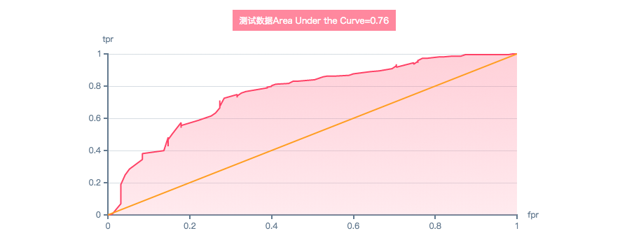
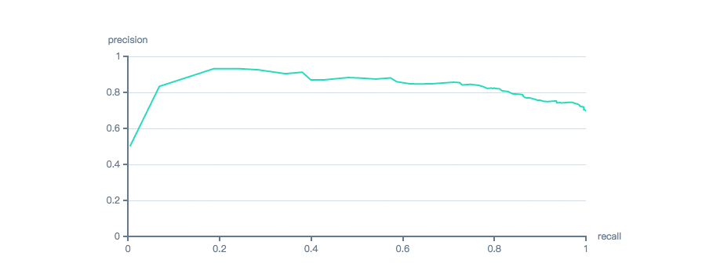
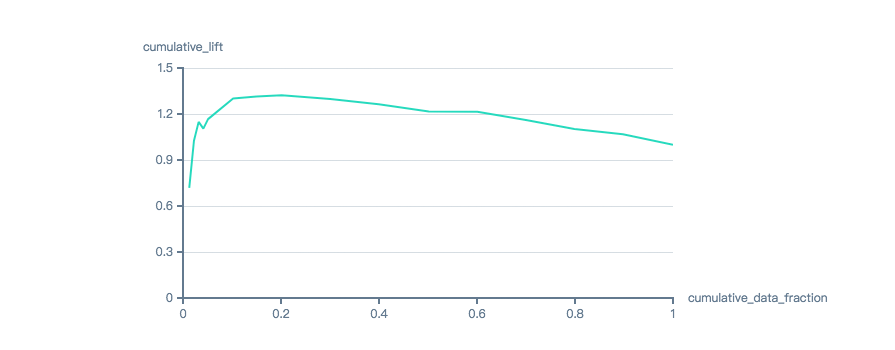
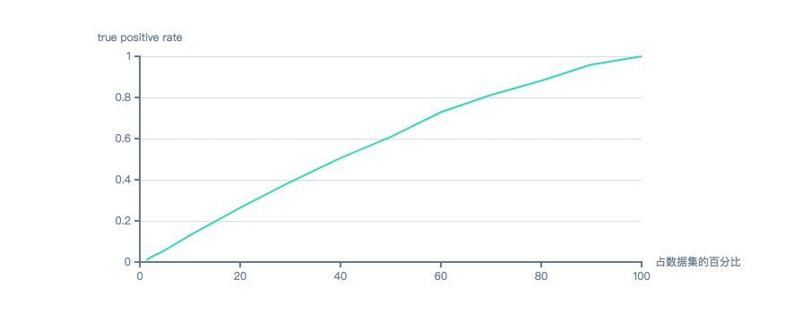
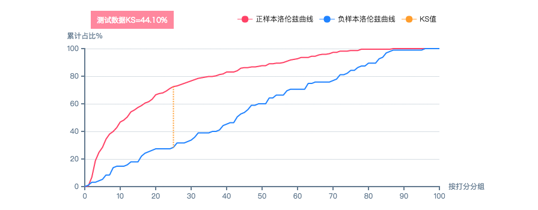

- 机器学习算法
- 逻辑回归(LR:logoistic regression)
- 深度学习(DL:deep learning)
- 随机森林(RF:random fosrest)
- 朴素贝叶斯(NB:naïve bayes)
- 梯度提升算法(GBM)
- 基于阈值的评估指标
- 混肴矩阵和评估指标
- 综合评估指标
- ROC 曲线和 AUC
- Precision/Recall 曲线
- Lift 曲线
- Cumulative Gain 曲线
- K-S 曲线
- SCORE分组统计
- TOPN 维度统计
机器学习算法
逻辑回归
是一种有监督的统计学习方法，将线性公式（y=βx+b）与sigmod函数($ 1 \over 1+e^x $)结合，得到逻辑回归函数(y=$ 1 \over 1+e^{\beta x+b } $ )，用于对样本进行分类，它的预测结果是某样本属于正类的可能性是多少。具体参见https://en.wikipedia.org/wiki/Logistic_regression。
Atom中算法内部进行如下操作：
（1）one-hot；
（2）缺失值填充，均值；
（3）去除共线性；
（4）变量缩放，标准化。此外，因为可以进行L1、L2正则化，所以可以不进行变量筛选 。用lr算法时，不建议进行欠抽样。
算法默认参数
-
是否对全量做统计、是否做抽样统计
可选择是否做全量统计，是否做抽样统计。数值变量统计最大、最小、中位数、均值、方差，因子型变量统计各变量的不同因子及对应样本数，可选择全量或随机抽样统计，或不进行统计。
设置“cal_statics_universal”为true时，进行全量统计；“cal_statics_sampling”设为true时，进行抽样统计（atom根据数据量决定抽样比例），若“cal_statics_sampling”设置成小于1的小数，表示按该比例抽样，若“cal_statics_sampling”设置成大于1的整数，表示按此样本量抽样；都为false，不进行统计。 -
特征最大缺失值比例
若变量的缺失记录大于所设最大缺失比率，就删除变量。对应配置文件中的“max_variable_miss_prop”。类型：float，范围：[0.7,1.0]。
-
最大因子数
若因子型变量的不同因子数大于所设最大因子数（默认不要超过 1000），就删除变量。对应配置文件中的“max_factor_prop”。类型：int，范围：[0,1000]。
-
是否抽样
可选择是否抽样。若因子型变量的不同因子数大于所设最大因子数（默认不要超过 1000），就删除变量。对应配置文件中的“max_factor_prop”。设置“sampling_method”设 null，不抽样。
-
欠抽样比例
可选择是否欠抽样，比例可选，默认值5（多类/少类） 。设置“sampling_method”为“undersampling”时，进行欠抽样，比例为“unbalanced_cutoff”的值。类型：int，范围：[2,∞）。
-
k折交叉验证
若要进行 k-fold交叉验证，设置“cv_k”值大于等于2，否则训练时按 7/3 拆分训练、验证集。类型：int，范围：[1,5]。
-
主要调整参数
alpha
平衡L1和L2正则化比例，alpha取1代表只进行L1正则化（Lasso）， alpha取0代表只进行L2正则化（Ridge）。类型：float，范围：[0,1.0]。
-
lambda
调节正则化幅度，如果lambda取0, 则不进行正则化，此时alpha参数也就没用。类型：float，范围：[0,1.0]。
深度学习
深度学习是一种含多隐层的多层感知器（类似深层神经网络）。它通过组合低层特征形成更加抽象的高层表示属性类别或特征，以发现数据的分布式特征表示。具体参见https://baike.baidu.com/item/%E6%B7%B1%E5%BA%A6%E5%AD%A6%E4%B9%A0/3729729?fr=aladdin，https://en.wikipedia.org/wiki/Deep_learning。
算法默认参数
-
是否对全量做统计、是否做抽样统计
可选择是否做全量统计，是否做抽样统计。数值变量统计最大、最小、中位数、均值、方差，因子型变量统计各变量的不同因子及对应样本数，可选择全量或随机抽样统计，或不进行统计。
设置“cal_statics_universal”为true时，进行全量统计；“cal_statics_sampling”设为true时，进行抽样统计（atom根据数据量决定抽样比例），若“cal_statics_sampling”设置成小于1的小数，表示按该比例抽样，若“cal_statics_sampling”设置成大于1的整数，表示按此样本量抽样；都为false，不进行统计。 -
特征最大缺失值比例
若变量的缺失记录大于所设最大缺失比率，就删除变量。对应配置文件中的“max_variable_miss_prop”。类型：float，范围：[0.7,1.0]。
-
最大因子数
若因子型变量的不同因子数大于所设最大因子数（默认不要超过 1000），就删除变量。对应配置文件中的“max_factor_prop”。类型：int，范围：[0,1000]。
-
是否抽样
可选择是否抽样。若因子型变量的不同因子数大于所设最大因子数（默认不要超过 1000），就删除变量。对应配置文件中的“max_factor_prop”。设置“sampling_method”设 null，不抽样。
-
欠抽样比例
可选择是否欠抽样，比例可选，默认值5（多类/少类） 。设置“sampling_method”为“undersampling”时，进行欠抽样，比例为“unbalanced_cutoff”的值。类型：int，范围：[2,∞）。
-
k折交叉验证
若要进行 k-fold交叉验证，设置“cv_k”值大于等于2，否则训练时按 7/3 拆分训练、验证集。类型：int，范围：[1,5]。
-
主要调整参数
hidden
隐层数及对应每层节点数（默认[20, 20]，即2个隐层，每层20个神经元），隐层越多，每层神经元越多，模型拟合的效果越好，但是运算效率会下降。类型：list[int]
-
input_dropout_ratio
输入层特征舍去比例（默认为0），如果模型特征过多，设置大于0的值会增加模型泛化能力，推荐 0.1 或 0.2。类型：float，范围：[0, 1.0]。
-
l1
l1正则化（默认0），设置该值可减小过拟合。类型：float，范围：[0, small)。
-
l2
L2正则化（默认0），设置该值可减小过拟合。类型：float，范围：[0, small)。
随机森林
用随机方式建立一个森林，森林由很多决策树组成，随机森林的每一棵决策树之间没有关联。训练得到森林后，当新样本进入时，森林中每一棵决策树分别判断新样本属于哪一类，然后哪一类被选择最多，就预测该样本为那一类（类似投票）。具体参https://baike.baidu.com/item/%E9%9A%8F%E6%9C%BA%E6%A3%AE%E6%9E%97，https://zh.wikipedia.org/wiki/%E9%9A%8F%E6%9C%BA%E6%A3%AE%E6%9E%97见。同gbm一样，该算法把缺失值当做一个类型，而不会进行填充。
算法默认参数
-
是否对全量做统计、是否做抽样统计
可选择是否做全量统计，是否做抽样统计。数值变量统计最大、最小、中位数、均值、方差，因子型变量统计各变量的不同因子及对应样本数，可选择全量或随机抽样统计，或不进行统计。
设置“cal_statics_universal”为true时，进行全量统计；“cal_statics_sampling”设为true时，进行抽样统计（atom根据数据量决定抽样比例），若“cal_statics_sampling”设置成小于1的小数，表示按该比例抽样，若“cal_statics_sampling”设置成大于1的整数，表示按此样本量抽样；都为false，不进行统计。 -
特征最大缺失值比例
若变量的缺失记录大于所设最大缺失比率，就删除变量。对应配置文件中的“max_variable_miss_prop”。类型：float，范围：[0.7,1.0]。
-
最大因子数
若因子型变量的不同因子数大于所设最大因子数（默认不要超过 1000），就删除变量。对应配置文件中的“max_factor_prop”。类型：int，范围：[0,1000]。
-
是否抽样
可选择是否抽样。若因子型变量的不同因子数大于所设最大因子数（默认不要超过 1000），就删除变量。对应配置文件中的“max_factor_prop”。设置“sampling_method”设 null，不抽样。
-
欠抽样比例
可选择是否欠抽样，比例可选，默认值5（多类/少类） 。设置“sampling_method”为“undersampling”时，进行欠抽样，比例为“unbalanced_cutoff”的值。类型：int，范围：[2,∞）。
-
k折交叉验证
若要进行 k-fold交叉验证，设置“cv_k”值大于等于2，否则训练时按 7/3 拆分训练、验证集。类型：int，范围：[1,5]。
-
主要调整参数
ntrees
树的棵数（默认50），增加树的棵数可以降低过拟合，但建议取值不要过大（一般不超过200），否则运算慢，且对过拟合的降低也不会很显著。类型：int，范围： (0, ∞)。
-
max_depth
树最大深度（默认20），树越深，偏差降低，方差增加，且运行越慢。类型：int，范围：(0, ∞)。
-
sample_rate
训练每棵树所用子样本占总样本比例（默认0.632，自助抽样），该比例越低，运算加快，树与树之间相关性下降，方差下降，但偏差可能增加。sample_rate一般与ntree值同时调整，sample_rate减小时，ntree最好取大一些。类型：float，范围：[0, 1.0]。
-
min_row
树的叶节点所需最少样本数（默认10），该值越大，模型方差减小，但偏差变大。类型：float，范围：(0，∞)。
-
col_sample_rate_per_tree
每棵数特征的抽样比例（默认1），比例越大，偏差会减小，但会降低单棵数的多样性，同时会运行会变慢。类型：float，范围：[0, 1.0]。
朴素贝叶斯
朴素贝叶斯分类器是基于特征条件独立性假设（对已知类别，假设所有特征相互独立，也就是说每个特征对分类结果的影响互不干扰），利用贝叶斯公式进行分类的简单概率分类器。朴素贝叶斯思想为：对于给出的待分类项，求解在此项出现的条件下各个类别出现的概率，哪个最大，就认为此待分类项属于哪个类别。具体参见https://baike.baidu.com/item/%E6%9C%B4%E7%B4%A0%E8%B4%9D%E5%8F%B6%E6%96%AF，https://en.wikipedia.org/wiki/Naive_Bayes_classifier。该算法会忽略只要含有一个缺失变量的样本，鉴于银行数据会有很多缺失值，所以Atom默认会对数据进行填充（数值型填充中位数，因子型填充数量最多的因子）。
算法默认参数
-
是否对全量做统计、是否做抽样统计
可选择是否做全量统计，是否做抽样统计。数值变量统计最大、最小、中位数、均值、方差，因子型变量统计各变量的不同因子及对应样本数，可选择全量或随机抽样统计，或不进行统计。
设置“cal_statics_universal”为true时，进行全量统计；“cal_statics_sampling”设为true时，进行抽样统计（atom根据数据量决定抽样比例），若“cal_statics_sampling”设置成小于1的小数，表示按该比例抽样，若“cal_statics_sampling”设置成大于1的整数，表示按此样本量抽样；都为false，不进行统计。 -
特征最大缺失值比例
若变量的缺失记录大于所设最大缺失比率，就删除变量。对应配置文件中的“max_variable_miss_prop”。类型：float，范围：[0.7,1.0]。
-
最大因子数
若因子型变量的不同因子数大于所设最大因子数（默认不要超过 1000），就删除变量。对应配置文件中的“max_factor_prop”。类型：int，范围：[0,1000]。
-
是否抽样
可选择是否抽样。若因子型变量的不同因子数大于所设最大因子数（默认不要超过 1000），就删除变量。对应配置文件中的“max_factor_prop”。设置“sampling_method”设 null，不抽样。
-
欠抽样比例
可选择是否欠抽样，比例可选，默认值5（多类/少类） 。设置“sampling_method”为“undersampling”时，进行欠抽样，比例为“unbalanced_cutoff”的值。类型：int，范围：[2,∞）。
-
k折交叉验证
若要进行 k-fold交叉验证，设置“cv_k”值大于等于2，否则训练时按 7/3 拆分训练、验证集。类型：int，范围：[1,5]。
-
主要调整参数
laplace
拉普拉斯平滑（默认0），为避免部分属性的条件概率为0，通常可以设一个比较小的数。类型：float，范围：(0, ∞)。
-
min_sdev
样本不足情况下最小标准偏差（默认0.001），特征为数值型时，假设特征服从正态分布，其所需要的标准差参数。类型：float，范围：[0, samll)。
-
eps_sdev
标准偏差阈值（默认0）。类型：float，范围：[0, small)。
梯度提升算法
算法为每一个样本赋上一个权重值，初始时，都是一样重要。在每一步迭代训练得到一个决策树模型，模型对样本的估计有残差(residual)，那么下一次，在残差减少的梯度(Gradient)方向上建立一个新的决策树模型，。进行了N次迭代，便得到N个分类器（树），然后将它们组合起来（加权或者投票等），得到一个最终的模型。具体参见https://en.wikipedia.org/wiki/Gradient_boosting。该算法把缺失值当做一个类型，而不会进行填充。
算法默认参数
-
是否对全量做统计、是否做抽样统计
可选择是否做全量统计，是否做抽样统计。数值变量统计最大、最小、中位数、均值、方差，因子型变量统计各变量的不同因子及对应样本数，可选择全量或随机抽样统计，或不进行统计。
设置“cal_statics_universal”为true时，进行全量统计；“cal_statics_sampling”设为true时，进行抽样统计（atom根据数据量决定抽样比例），若“cal_statics_sampling”设置成小于1的小数，表示按该比例抽样，若“cal_statics_sampling”设置成大于1的整数，表示按此样本量抽样；都为false，不进行统计。 -
特征最大缺失值比例
若变量的缺失记录大于所设最大缺失比率，就删除变量。对应配置文件中的“max_variable_miss_prop”。类型：float，范围：[0.7,1.0]。
-
最大因子数
若因子型变量的不同因子数大于所设最大因子数（默认不要超过 1000），就删除变量。对应配置文件中的“max_factor_prop”。类型：int，范围：[0,1000]。
-
是否抽样
可选择是否抽样。若因子型变量的不同因子数大于所设最大因子数（默认不要超过 1000），就删除变量。对应配置文件中的“max_factor_prop”。设置“sampling_method”设 null，不抽样。
-
欠抽样比例
可选择是否欠抽样，比例可选，默认值5（多类/少类） 。设置“sampling_method”为“undersampling”时，进行欠抽样，比例为“unbalanced_cutoff”的值。类型：int，范围：[2,∞）。
-
k折交叉验证
若要进行 k-fold交叉验证，设置“cv_k”值大于等于2，否则训练时按 7/3 拆分训练、验证集。类型：int，范围：[1,5]。
-
主要调整参数
ntrees
树的棵数（默认50），该值越大，偏差减小，但方差变大，建议取值不超过100，否则运算慢。类型：int , 范围：(0, ∞)
-
max_depth
树最大深度（默认5），取值不要超过10，否则运算慢，容易过拟合。类型：int，范围：(0, ∞)。
-
learn_rate
每次更新权重（默认0.1），取值越小，效果越好，但过小时需要增加树的棵数来使最终模型逼近最佳。类型：float，范围：[0,1]。
-
min_rows
树的叶节点所需最少样本数（默认10），该值越大，模型方差减小，但偏差变大。类型：float，范围：(0，∞)。
-
sample_rate
训练每棵数所用子样本占总样本比例（默认1），该比例越低，方差下降，但偏差变大。类型：float，范围：[0, 1.0]。
-
sample_rate_per_class
训练每棵数所用特征数占总特征数比例（默认1），该减小该比例可增加泛化性能，但偏差可能变大。类型：float，范围：[0, 1.0]。
-
col_sample_rate
每棵数分支时所用特征数占总特征数比例（默认1），该减小该比例可增加泛化性能，但偏差可能变大。类型：float，范围：[0, 1.0]。
基于阈值的评估指标
混淆矩阵和评估指标
通过它可以直观地观察到算法的效果。它反映了分类结果的混淆程度，真实的正负样本数和预测的正负样本数，以及真实与预测之间的重合。
| 预测 | ||||||
| 0 | 1 | 合计 | 比率 | |||
| 实际 | 0 | tn (true negative) | fp (false positive) | fp+tn (actual negative) | tn/(fp+tn) (即tnr，spencificity) | fp/(fp+tn) (即fpr) |
| 1 | fn (false negative) | tp (true positive) | tp+fn (actual positive) | tp/(tp+fn) (即tpr，recall，sensitivity) | fn/(tp+fn) (即fnr) | |
| 合计 | tn+fn (predicted negative) | tp+fp (predicted positive) | tp+fn+fp+tn | |||
| 比率 | tp/(tp+fp) (即precision) | （tp+tn)/(tp+fn+fp+tn) (即accuracy) | ||||
- tp被模型预测为正类的正样本。
- fp被模型预测为正类的负样本。
- tn被模型预测为负类的负样本。
- fn被模型预测为负类的正样本。
- tpr真正率，所有真实正样本中，被预测为正样本的比率。
- fpr假正率，所有真实负样本中，被预测为正样本的比率。
- tnr真负率，所有真实负样本中，被预测为正样本的比率。
- fnr假负率，所有真实负样本中，被预测为正样本的比率。
-
accuracy
精确度，预测正确的样本占总样本的比率。
-
precision
准确率（查准率），正确预测为正样本占所有预测为正样本的比率。precision 体现了模型对负样本的区分能力，precision越高，说明模型对负样本的区分能力越强。
-
recall
召回率（查全率），正确预测为正样本占所有真实真样本的比率。体现了模型对正样本的识别能力，recall 越高，说明模型对正样本的识别能力越强。
-
f1
recall和precision的综合，f1越高说明模型越稳健，$f_1 = \frac {2\cdot precision \cdot recall}{precision+recall}$。
-
f2
recall和precisoin的综合，它对precisoion赋予了更大的权重，$f_2 = \frac {5\cdot precision \cdot recall}{4 \cdot precision+recall}$。
-
f0.5
此时β=0.5， $f_0.5$则是加权调和平均,度量了精准率对召回率的想对重要性$\frac {1}{F_\beta} = \frac {1}{1 + \beta^2} (\frac {1}{P}+\frac {\beta^2}{R})$。
-
sensitivity
即tpr。
-
specificity
即tnr。
综合评估指标
ROC曲线和AUC
在不同的阈值下，fpr和tpr所组成的坐标连接而成的曲线，fpr为横坐标，tpr为纵坐标。如上图所示ROC曲线，理想目标：tpr=1，fpr=0，即图中(0,1)点，故ROC曲线越靠拢(0,1)点，越偏离45度对角线越好，即Sensitivity、Specificity越大效果越好。红色斜对角线表示随机模型。
AUC 是ROC曲线下的面积，取值范围在0.5和1之间。使用AUC值作为评价标准是因为很多时候ROC曲线并不能清晰的说明哪个分类器的效果更好，而AUC作为数值可以直观的评价分类器的好坏，值越大越好。AUC表示当你随机挑选一个正样本以及一个负样本，当前的分类算法根据计算得到的Score值将这个正样本排在负样本前面的概率。当然，AUC值越大，当前的分类算法越有可能将正样本排在负样本前面，即能够更好的分类。
-
GINI
正样本数在负样本数上的的累积分布与随机分布曲线之间的面积，正样本与负样本分布之间的差异越大，gini指标越高，表明模型的风险区分能力越强。
-
logloss
对数损失，该值越小表示真实标签与预测概率间的差距越小，分类性能越好。
-
MES
平均平方误差，该值越小表示分类性能越好。
-
RMES
平均平方误差的平方根，该值越小表示分类性能越好。
-  ROC曲线图
Precision/Recall曲线
precision-recall曲线由precision和recall组成坐标绘制的曲线，一般情况下，recall和precision成负相关。
Precision=TP/（TP+FP）是指每一次计算的精准率，即预测为正的样本中有多少为正的样本，作为纵坐标。
Recall=TP/（TP+FN）是指每一次计算的召回率，即样本中的正例有多少被预测正确了，作为横坐标。
Recall体现了分类模型对正样本的识别能力，Recall越高，说明模型对正样本的识别能力越强，Precision体现了模型对负样本的分析能力，Precision越高，说明模型对负样本的区分能力越强，Precision/Recall曲线反映了分类器对正样本的识别准确程度和对正样本的覆盖能力之间的权衡。
-  Precision/Recall曲线图
Lift曲线
为在不同的打分阈值下（从高到底），准确率（precision）与实际样本中正样本比例的比率（precision/((tp+fn)/(tp+fn+tn+fp))），即与不利用模型相比，模型的预测能力提升了多少。不利用模型，只能用(tp+fn)/(tp+fn+tn+fp)估计正例的比例，利用模型后，可从预测为正的子集tp+fp中选正例，这时预测准确率为precision（tp/(tp+fp)）。下图为Lift曲线，可见左边打分阈值较高时，提升较大，随着阈值的降低，最后所有样本预测为正，此时准确率与实际样本中的正例比率没区别，所以Lift为1。
-  Lift曲线图
Cumulative Gain曲线
累积增益图，增益图实际上描述的是整体覆盖率指标。按照模型预测出的概率从高到低排列，求得每一个百分位及其之前的累积正样本数（tp）与总正样本数（tp+fn）的比率，并将值标注在图形区域内，则形成累积的增益图。累积曲线越快爬向左上，表示模型性能越好。
-  Cumulative Gain曲线图
KS曲线
由两条曲线组成，即在不同打分分组下，累积的真正样本比例（真正率，tpr）曲线与假正样本比率（假正率，fpr）曲线。ks值就是这两条曲线间的最大差值，ks指标越大，那么模型的风险区分能力越强。
-  KS曲线图
SCORE分组统计
Score分组统计就是把模型预测输出的分数分为10个区间，精确度为0.1，然后进行分组统计各项评估指标。
比如统计0.9~1区间内的正样本占比，即分数在0.9至1之间的样本数与总样本的比值。 真正例，伪正例，伪负例，真负例等指标都会随着判定阈值的变化而变化。
比如设定阈值为0.5，则认为打分在0.5到1之间的样本都为正样本，此时再将预测的结果和实际样本进行对比即可算出其他所有指标。关于指标的计算可参见混淆矩阵和评估指标。
TOPN维度统计
topN维度统计指标是指将score中topN%（N=10，20，30...100）的样本全部看做正样本，然后对其它指标进行计算。
如：N=10，则top10%是指将前10%的样本均视为正样本，剩余的90%均视为负样本，此时再将预测的结果和实际样本的正负例进行对比算出TP，FP，TN，FN，再根据评估指标的计算公式计算出精准率，召回率，specifity。